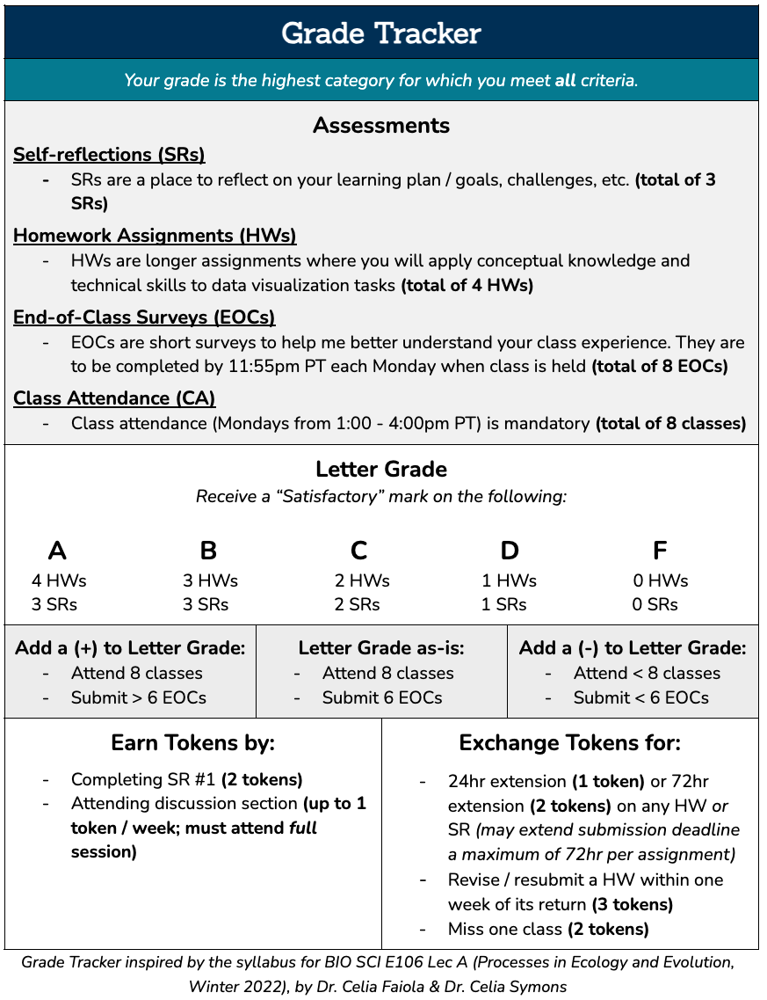

Assignments
Earning “Satisfactory” marks on Self-reflections (SRs) and Homework Assignments (HWs) will determine your letter grade (e.g. A, B, etc.) for this course.
| Assignment Type | Assignment Title | Date Assigned | Date Due |
|---|---|---|---|
| SR | Pre-course reflection (SR #1) | Mon 01/08/2024 | Sat 01/13/2024, 11:59pm PT |
| HW | Homework Assignment #1 | Mon 01/08/2024 | Sat 01/20/2024, 11:59pm PT |
| HW | Homework Assignment #2 | Mon 01/22/2024 | Sat 02/03/2024, 11:59pm PT |
| SR | Mid-course reflection (SR #2) | Mon 02/05/2024 | Sat 02/10/2024, 11:59pm PT |
| HW | Homework Assignment #3 | Mon 02/12/2024 | Sat 02/24/2024, 11:59pm PT |
| HW | Homework Assignment #4 | Mon 02/26/2024 | Sat 03/09/2024, 11:59pm PT |
| SR | End-of-course reflection (SR #3) | Mon 03/11/2024 | Sat 03/16/2024, 11:59pm PT |
End-of-class surveys
End-of-class surveys (EOCs) will become available at the end of each class (Mondays) and are due by end-of-day (11:55pm PT). Completing EOCs by the due dates / times will, in-part (along with class attendance), determine whether you earn a +/- on your course grade.
| EOC link | Date Assigned | Date Due |
|---|---|---|
| EOC (week 1) | Mon 01/08/2024 | Mon 01/08/2024, 11:55pm PT |
| No lecture or EOC (week 2) | NA | NA |
| EOC (week 3) | Mon 01/22/2024 | Mon 01/22/2024, 11:55pm PT |
| EOC (week 4) | Mon 01/29/2024 | Mon 01/29/2024, 11:55pm PT |
| EOC (week 5) | Mon 02/05/2024 | Mon 02/05/2024, 11:55pm PT |
| EOC (week 6) | Mon 02/12/2024 | Mon 02/12/2024, 11:55pm PT |
| No lecture or EOC (week 7) | NA | NA |
| EOC (week 8) | Mon 02/26/2024 | Mon 02/26/2024, 11:55pm PT |
| EOC (week 9) | Mon 03/04/2024 | Mon 03/04/2024, 11:55pm PT |
| EOC (week 10) | Mon 03/11/2024 | Mon 03/11/2024, 11:55pm PT |
Grade Tracker
Use the Grade Tracker, below, to determine your course grade:
Redeem tokens in exchange for assignment extensions, missing class, or to revise / resubmit an assignment that received a “Not Yet” mark.